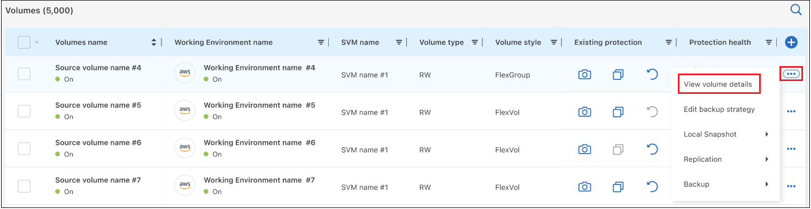
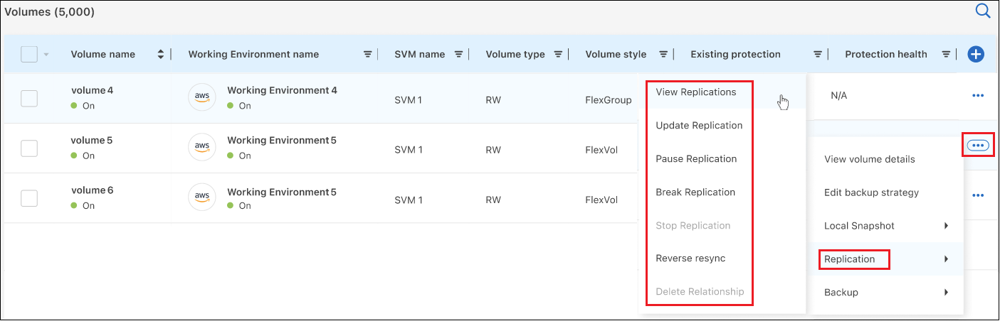
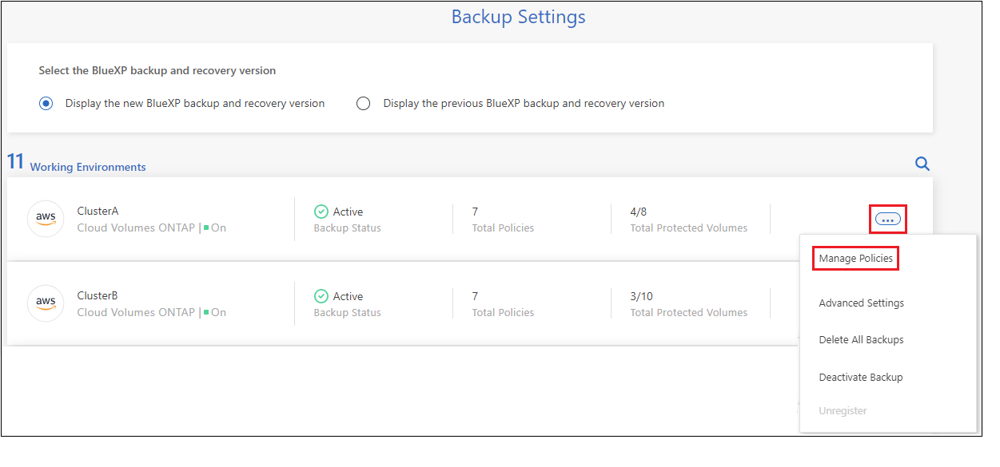
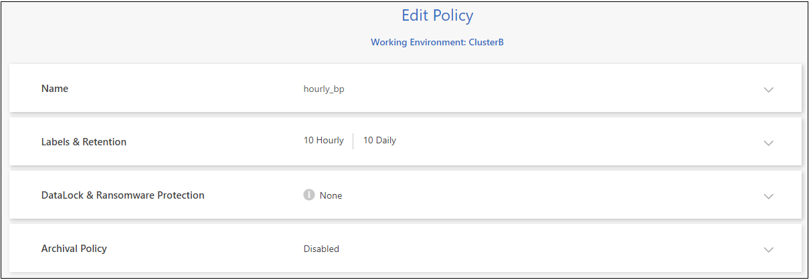

Amazon Web Services
Amazon Web Services
 Google Cloud
Google Cloud
 Microsoft Azure
Microsoft Azure
 Richiedi modifiche alla documentazione
Richiedi modifiche alla documentazione Modifica questa pagina
Modifica questa pagina Scopri come collaborare
Scopri come collaborareGestisci i backup per i tuoi sistemi ONTAP
Collaboratori
È possibile gestire i backup per i sistemi Cloud Volumes ONTAP e ONTAP on-premise modificando la pianificazione del backup, attivando/disattivando i backup dei volumi, mettendo in pausa i backup, eliminando i backup e molto altro ancora. Sono inclusi tutti i tipi di backup, incluse le copie Snapshot, i volumi replicati e i file di backup nello storage a oggetti.

|
Non gestire o modificare i file di backup direttamente sui sistemi storage o dall’ambiente del cloud provider. Questo potrebbe danneggiare i file e causare una configurazione non supportata. |
Visualizzare lo stato di backup dei volumi negli ambienti di lavoro
È possibile visualizzare un elenco di tutti i volumi di cui si sta effettuando il backup nella dashboard di backup dei volumi. Sono inclusi tutti i tipi di backup, incluse le copie Snapshot, i volumi replicati e i file di backup nello storage a oggetti. È inoltre possibile visualizzare i volumi degli ambienti di lavoro che non sono attualmente sottoposti a backup.
-
Dal menu BlueXP, selezionare protezione > Backup e ripristino.
-
Fare clic sulla scheda Volumes (volumi) per visualizzare l’elenco dei volumi di backup per i sistemi Cloud Volumes ONTAP e ONTAP on-premise.

-
Se si cercano volumi specifici in determinati ambienti di lavoro, è possibile perfezionare l’elenco in base all’ambiente di lavoro e al volume. È inoltre possibile utilizzare il filtro di ricerca oppure ordinare le colonne in base allo stile del volume (FlexVol o FlexGroup), al tipo di volume e altro ancora.
Per visualizzare ulteriori colonne (aggregati, stile di protezione (Windows o UNIX), policy di snapshot, policy di replica e policy di backup), selezionare
 .
. -
Esaminare lo stato delle opzioni di protezione nella colonna "Existing Protection" (protezione esistente). Le tre icone sono "Local Snapshot Copies" (copie Snapshot locali), "Replicated Volumes" (volumi replicati) e "Backup nello storage a oggetti".

Ogni icona è blu quando il tipo di backup è attivato e grigia quando il tipo di backup è inattivo. È possibile spostare il cursore su ciascuna icona per visualizzare la policy di backup utilizzata e altre informazioni pertinenti per ciascun tipo di backup.
Attivare il backup su volumi aggiuntivi in un ambiente di lavoro
Se è stato attivato il backup solo su alcuni volumi in un ambiente di lavoro quando è stato attivato il backup e ripristino BlueXP per la prima volta, è possibile attivare i backup su volumi aggiuntivi in un secondo momento.
-
Dalla scheda Volumes (volumi), identificare il volume su cui si desidera attivare i backup e selezionare il menu Actions (azioni)
 Alla fine della riga e selezionare Activate backup (attiva backup).
Alla fine della riga e selezionare Activate backup (attiva backup).
-
Nella pagina define backup strategy, selezionare l’architettura di backup, quindi definire i criteri e altri dettagli per le copie Snapshot locali, i volumi replicati e i file di backup. Consultare i dettagli relativi alle opzioni di backup dei volumi iniziali attivati in questo ambiente di lavoro. Quindi fare clic su Avanti.
-
Esaminare le impostazioni di backup per questo volume, quindi fare clic su Activate Backup (attiva backup).
Se si desidera attivare il backup su più volumi contemporaneamente con impostazioni di backup identiche, vedere Modificare le impostazioni di backup su più volumi per ulteriori informazioni.
Modificare le impostazioni di backup assegnate ai volumi esistenti
È possibile modificare i criteri di backup assegnati ai volumi esistenti che hanno assegnato criteri. È possibile modificare i criteri per le copie Snapshot locali, i volumi replicati e i file di backup. Qualsiasi nuova policy di Snapshot, replica o backup che si desidera applicare ai volumi deve già esistere.
Modificare le impostazioni di backup su un singolo volume
-
Dalla scheda Volumes (volumi), identificare il volume che si desidera modificare, quindi selezionare il menu Actions (azioni)
Alla fine della riga e selezionare Modifica strategia di backup.
-
Nella pagina Modifica strategia di backup, apportare modifiche alle policy di backup esistenti per le copie Snapshot locali, i volumi replicati e i file di backup e fare clic su Avanti.
Se sono stati attivati DataLock e ransomware Protection per i backup cloud nella policy di backup iniziale quando si attiva il backup e ripristino BlueXP per questo cluster, verranno visualizzati solo gli altri criteri configurati con DataLock. Inoltre, se non sono stati attivati DataLock e ransomware Protection durante l’attivazione del backup e ripristino BlueXP, verranno visualizzate solo altre policy di backup cloud che non dispongono di DataLock configurato.
-
Esaminare le impostazioni di backup per questo volume, quindi fare clic su Activate Backup (attiva backup).
Modificare le impostazioni di backup su più volumi
Se si desidera utilizzare le stesse impostazioni di backup su più volumi, è possibile attivare o modificare le impostazioni di backup su più volumi contemporaneamente. È possibile selezionare volumi che non dispongono di impostazioni di backup, solo di impostazioni Snapshot, solo di backup su impostazioni cloud e così via e apportare modifiche in blocco in tutti questi volumi con diverse impostazioni di backup.
Quando si lavora con più volumi, tutti i volumi devono avere le seguenti caratteristiche comuni:
-
stesso ambiente di lavoro
-
Stesso stile (volume FlexVol o FlexGroup)
-
Stesso tipo (volume Read-write o Data Protection)
-
Dalla scheda Volumes (volumi), filtrare in base all’ambiente di lavoro in cui risiedono i volumi.
-
Selezionare tutti i volumi su cui si desidera gestire le impostazioni di backup.
-
A seconda del tipo di azione di backup che si desidera configurare, fare clic sul pulsante nel menu azioni in blocco:

Azione di backup… Fare clic su questo pulsante… Gestire le impostazioni di backup di Snapshot
Gestisci snapshot locali
Gestire le impostazioni di backup della replica
Gestisci replica
Gestire le impostazioni di backup su cloud
Gestisci backup
Gestire diversi tipi di impostazioni di backup. Questa opzione consente di modificare anche l’architettura di backup.
Gestisci backup e ripristino
-
Nella pagina di backup visualizzata, apportare modifiche ai criteri di backup esistenti per le copie Snapshot locali, i volumi replicati o i file di backup e fare clic su Salva.
Se sono stati attivati DataLock e ransomware Protection per i backup cloud nella policy di backup iniziale quando si attiva il backup e ripristino BlueXP per questo cluster, verranno visualizzati solo gli altri criteri configurati con DataLock. Inoltre, se non sono stati attivati DataLock e ransomware Protection durante l’attivazione del backup e ripristino BlueXP, verranno visualizzate solo altre policy di backup cloud che non dispongono di DataLock configurato.
Creare un backup manuale del volume in qualsiasi momento
È possibile creare un backup on-demand in qualsiasi momento per acquisire lo stato corrente del volume. Questo può essere utile se sono state apportate modifiche molto importanti a un volume e non si desidera attendere il successivo backup pianificato per proteggere tali dati. È inoltre possibile utilizzare questa funzionalità per creare un backup per un volume che non viene attualmente sottoposto a backup e che si desidera acquisire lo stato corrente.
È possibile creare una copia Snapshot ad-hoc o un backup su un oggetto di un volume. Non è possibile creare un volume replicato ad-hoc.
Il nome del backup include la data e l’ora in modo da poter identificare il backup on-demand di altri backup pianificati.
Se sono stati attivati DataLock e ransomware Protection durante l’attivazione del backup e ripristino BlueXP per questo cluster, anche il backup on-demand verrà configurato con DataLock e il periodo di conservazione sarà di 30 giorni. Le scansioni ransomware non sono supportate per i backup ad-hoc. "Scopri di più su DataLock e la protezione ransomware".
Quando si crea un backup ad-hoc, viene creata un’istantanea sul volume di origine. Poiché questa istantanea non fa parte di una normale pianificazione Snapshot, non viene disattivata. Una volta completato il backup, è possibile eliminare manualmente questa istantanea dal volume di origine. In questo modo, i blocchi correlati a questa istantanea verranno liberati. Il nome dell’istantanea inizia con cbs-snapshot-adhoc-. "Scopri come eliminare un’istantanea utilizzando la CLI di ONTAP".

|
Il backup dei volumi on-demand non è supportato sui volumi di protezione dei dati. |
-
Dalla scheda Volumes (volumi), fare clic su
 Per il volume e selezionare Backup > Crea backup ad-hoc.
Per il volume e selezionare Backup > Crea backup ad-hoc.
La colonna Backup Status (Stato backup) per quel volume visualizza "in corso" fino alla creazione del backup.
Visualizzare l’elenco dei backup per ciascun volume
È possibile visualizzare l’elenco di tutti i file di backup esistenti per ciascun volume. In questa pagina vengono visualizzati i dettagli relativi al volume di origine, alla posizione di destinazione e ai dettagli del backup, ad esempio l’ultimo backup eseguito, la policy di backup corrente, le dimensioni del file di backup e altro ancora.
-
Dalla scheda Volumes (volumi), fare clic su
Per il volume di origine e selezionare Visualizza dettagli volume.
Per impostazione predefinita, vengono visualizzati i dettagli del volume e l’elenco delle copie Snapshot.

-
Selezionare Snapshot, Replication o Backup per visualizzare l’elenco di tutti i file di backup per ciascun tipo di backup.

Eseguire una scansione ransomware su un backup di un volume nello storage a oggetti
Il software di protezione ransomware di NetApp esegue la scansione dei file di backup per cercare la prova di un attacco ransomware quando viene creato un file di backup su oggetto e quando vengono ripristinati i dati di un file di backup. È inoltre possibile eseguire una scansione di protezione ransomware on-demand in qualsiasi momento per verificare l’usabilità di uno specifico file di backup nello storage a oggetti. Questa operazione può essere utile se si è verificato un problema ransomware su un determinato volume e si desidera verificare che i backup di tale volume non siano interessati.
Questa funzione è disponibile solo se il backup del volume è stato creato da un sistema con ONTAP 9.11.1 o superiore e se sono stati attivati DataLock e protezione ransomware nel criterio di backup su oggetto.
-
Dalla scheda Volumes (volumi), fare clic su
Per il volume di origine e selezionare Visualizza dettagli volume.Vengono visualizzati i dettagli del volume.
-
Selezionare Backup per visualizzare l’elenco dei file di backup nello storage a oggetti.

-
Fare clic su
Per il file di backup del volume che si desidera cercare ransomware e fare clic su Scan for ransomware.
La colonna ransomware Protection (protezione ransomware) indica che la scansione è in corso.
Gestire la relazione di replica con il volume di origine
Dopo aver impostato la replica dei dati tra due sistemi, è possibile gestire la relazione di replica dei dati.
-
Dalla scheda Volumes (volumi), fare clic su
Per il volume di origine e selezionare l’opzione Replication. È possibile visualizzare tutte le opzioni disponibili. -
Selezionare l’azione di replica che si desidera eseguire.

La seguente tabella descrive le azioni disponibili:
Azione Descrizione Visualizza replica
Mostra i dettagli sulla relazione del volume: Informazioni sul trasferimento, informazioni sull’ultimo trasferimento, dettagli sul volume e informazioni sulla policy di protezione assegnata alla relazione.
Replica degli aggiornamenti
Avvia un trasferimento incrementale per aggiornare il volume di destinazione da sincronizzare con il volume di origine.
Sospendere la replica
Sospendere il trasferimento incrementale delle copie Snapshot per aggiornare il volume di destinazione. È possibile riprendere in seguito se si desidera riavviare gli aggiornamenti incrementali.
Interrompere la replica
Interrompe la relazione tra i volumi di origine e di destinazione e attiva il volume di destinazione per l’accesso ai dati, rendendolo di lettura/scrittura.
Questa opzione viene generalmente utilizzata quando il volume di origine non è in grado di fornire dati a causa di eventi come corruzione dei dati, eliminazione accidentale o stato offline.
"Scopri come configurare un volume di destinazione per l’accesso ai dati e riattivare un volume di origine nella documentazione di ONTAP"Interrompere la replica
Disattiva i backup di questo volume nel sistema di destinazione e disattiva la possibilità di ripristinare un volume. I backup esistenti non verranno eliminati. In questo modo non viene eliminata la relazione di protezione dei dati tra i volumi di origine e di destinazione.
Risincronizzazione inversa
Inverte i ruoli dei volumi di origine e di destinazione. Il contenuto del volume di origine originale viene sovrascritto dal contenuto del volume di destinazione. Questa operazione è utile quando si desidera riattivare un volume di origine che è stato offline.
Tutti i dati scritti nel volume di origine tra l’ultima replica dei dati e l’ora in cui il volume di origine è stato disattivato non vengono conservati.Elimina relazione
Elimina la relazione di protezione dei dati tra i volumi di origine e di destinazione, il che significa che la replica dei dati non avviene più tra i volumi. Questa azione non attiva il volume di destinazione per l’accesso ai dati, il che significa che non lo rende di lettura/scrittura. Questa azione elimina anche la relazione peer del cluster e la relazione peer di Storage VM (SVM), se non sono presenti altre relazioni di protezione dei dati tra i sistemi.
Dopo aver selezionato un’azione, BlueXP aggiorna la relazione.
Modificare una policy di backup su cloud esistente
È possibile modificare gli attributi di un criterio di backup attualmente applicato ai volumi in un ambiente di lavoro. La modifica del criterio di backup influisce su tutti i volumi esistenti che utilizzano il criterio.
|
|
|
-
Dalla scheda Volumes (volumi), selezionare Backup Settings (Impostazioni di backup).

-
Nella pagina Backup Settings, fare clic su
Per l’ambiente di lavoro in cui si desidera modificare le impostazioni dei criteri e selezionare Gestisci criteri.
-
Dalla pagina Manage Policies, fare clic su Edit per il criterio di backup che si desidera modificare in quell’ambiente di lavoro.

-
Nella pagina Edit Policy, fare clic su
 Per espandere la sezione etichette e conservazione per modificare la pianificazione e/o la conservazione del backup, quindi fare clic su Salva.
Per espandere la sezione etichette e conservazione per modificare la pianificazione e/o la conservazione del backup, quindi fare clic su Salva.
Se nel cluster è in esecuzione ONTAP 9.10.1 o versione successiva, è possibile attivare o disattivare il tiering dei backup nello storage di archiviazione dopo un certo numero di giorni.
"Scopri di più sull’utilizzo dello storage di archiviazione di Google". (Richiede ONTAP 9.12.1).
+
+ Nota: Tutti i file di backup che sono stati trasferiti allo storage di archiviazione su più livelli vengono lasciati in tale Tier se si interrompe il tiering dei backup da archiviare, ma non vengono automaticamente spostati di nuovo al Tier standard. Solo i nuovi backup dei volumi risiedono nel Tier standard.
Aggiungi un nuovo backup alla policy cloud
Quando si attiva il backup e il ripristino BlueXP per un ambiente di lavoro, tutti i volumi selezionati inizialmente vengono sottoposti a backup utilizzando il criterio di backup predefinito definito. Se si desidera assegnare criteri di backup diversi a determinati volumi con obiettivi RPO (Recovery Point Objective) diversi, è possibile creare criteri aggiuntivi per tale cluster e assegnarli ad altri volumi.
Se si desidera applicare un nuovo criterio di backup a determinati volumi in un ambiente di lavoro, è necessario prima aggiungere il criterio di backup all’ambiente di lavoro. Allora è possibile applicare il criterio ai volumi in tale ambiente di lavoro.
|
|
|
-
Dalla scheda Volumes (volumi), selezionare Backup Settings (Impostazioni di backup).
-
Nella pagina Backup Settings, fare clic su
Per l’ambiente di lavoro in cui si desidera aggiungere il nuovo criterio e selezionare Gestisci criteri. -
Dalla pagina Gestisci policy, fare clic su Aggiungi nuova policy.

-
Nella pagina Add New Policy, fare clic su
Per espandere la sezione etichette e conservazione per definire la pianificazione e la conservazione del backup, quindi fare clic su Salva.
Se nel cluster è in esecuzione ONTAP 9.10.1 o versione successiva, è possibile attivare o disattivare il tiering dei backup nello storage di archiviazione dopo un certo numero di giorni.
"Scopri di più sull’utilizzo dello storage di archiviazione di Google". (Richiede ONTAP 9.12.1).
+
Eliminare i backup
Il backup e ripristino BlueXP consente di eliminare un singolo file di backup, eliminare tutti i backup di un volume o eliminare tutti i backup di tutti i volumi in un ambiente di lavoro. È possibile eliminare tutti i backup se non sono più necessari o se il volume di origine è stato eliminato e si desidera rimuovere tutti i backup.
Nota: Non è possibile eliminare i file di backup bloccati utilizzando DataLock e la protezione ransomware. L’opzione "Delete" (Elimina) non sarà disponibile dall’interfaccia utente se sono stati selezionati uno o più file di backup bloccati.
|
|
Se si prevede di eliminare un ambiente di lavoro o un cluster con backup, è necessario eliminare i backup prima di eliminare il sistema. Il backup e il ripristino di BlueXP non eliminano automaticamente i backup quando si elimina un sistema e non esiste attualmente alcun supporto nell’interfaccia utente per eliminare i backup dopo che il sistema è stato eliminato. I costi di storage a oggetti per i backup rimanenti continueranno a essere addebitati. |
Eliminare tutti i file di backup per un ambiente di lavoro
L’eliminazione di tutti i backup sullo storage a oggetti per un ambiente di lavoro non disattiva i backup futuri dei volumi in questo ambiente di lavoro. Se si desidera interrompere la creazione di backup di tutti i volumi in un ambiente di lavoro, è possibile disattivare i backup come descritto qui.
Si noti che questa azione non influisce sulle copie Snapshot o sui volumi replicati: Questi tipi di file di backup non vengono eliminati.
-
Dalla scheda Volumes (volumi), selezionare Backup Settings (Impostazioni di backup).
-
Fare clic su
Per l’ambiente di lavoro in cui si desidera eliminare tutti i backup e selezionare Elimina tutti i backup.
-
Nella finestra di dialogo di conferma, immettere il nome dell’ambiente di lavoro e fare clic su Delete (Elimina).
Eliminare un singolo file di backup per un volume
Se non è più necessario, è possibile eliminare un singolo file di backup. Ciò include l’eliminazione di un singolo backup di una copia Snapshot di un volume o di un backup nello storage a oggetti.
Non è possibile eliminare i volumi replicati (volumi di protezione dei dati).
-
Dalla scheda Volumes (volumi), fare clic su
Per il volume di origine e selezionare Visualizza dettagli volume.Vengono visualizzati i dettagli del volume ed è possibile selezionare Snapshot, Replication o Backup per visualizzare l’elenco di tutti i file di backup del volume. Per impostazione predefinita, vengono visualizzate le copie Snapshot disponibili.
-
Selezionare Snapshot o Backup per visualizzare il tipo di file di backup che si desidera eliminare.
-
Fare clic su
Per il file di backup del volume che si desidera eliminare e fare clic su Delete (Elimina). La schermata riportata di seguito si trova in un file di backup nello storage a oggetti.
-
Nella finestra di dialogo di conferma, fare clic su Delete (Elimina).
Eliminare le relazioni di backup del volume
L’eliminazione della relazione di backup per un volume fornisce un meccanismo di archiviazione se si desidera interrompere la creazione di nuovi file di backup ed eliminare il volume di origine, mantenendo tutti i file di backup esistenti. Ciò consente di ripristinare il volume dal file di backup in futuro, se necessario, liberando spazio dal sistema di storage di origine.
Non è necessario eliminare il volume di origine. È possibile eliminare la relazione di backup per un volume e conservare il volume di origine. In questo caso, è possibile "attivare" il backup sul volume in un secondo momento. In questo caso, la copia di backup di riferimento originale continua ad essere utilizzata: Una nuova copia di backup di riferimento non viene creata ed esportata nel cloud. Se si riattiva una relazione di backup, al volume viene assegnato il criterio di backup predefinito.
Questa funzione è disponibile solo se nel sistema è in esecuzione ONTAP 9.12.1 o versione successiva.
Non è possibile eliminare il volume di origine dall’interfaccia utente di backup e ripristino di BlueXP. Tuttavia, è possibile aprire la pagina Volume Details (Dettagli volume) in Canvas, e. "eliminare il volume da lì".
|
|
Una volta eliminata la relazione, non è possibile eliminare i singoli file di backup dei volumi. Tuttavia, è possibile "eliminare tutti i backup del volume" se si desidera rimuovere tutti i file di backup. |
-
Dalla scheda Volumes (volumi), fare clic su
Per il volume di origine e selezionare Backup > Elimina relazione.
Disattivare il backup e ripristino BlueXP per un ambiente di lavoro
La disattivazione del backup e ripristino BlueXP per un ambiente di lavoro disattiva i backup di ciascun volume sul sistema e disattiva anche la possibilità di ripristinare un volume. I backup esistenti non verranno eliminati. In questo modo non si annulla la registrazione del servizio di backup da questo ambiente di lavoro, ma è possibile sospendere tutte le attività di backup e ripristino per un determinato periodo di tempo.
Tieni presente che il tuo cloud provider continuerà a addebitare i costi dello storage a oggetti per la capacità utilizzata dai backup, a meno che tu non lo utilizzi eliminare i backup.
-
Dalla scheda Volumes (volumi), selezionare Backup Settings (Impostazioni di backup).
-
Dalla pagina Backup Settings, fare clic su
Per l’ambiente di lavoro in cui si desidera disattivare i backup e selezionare Disattiva backup.
-
Nella finestra di dialogo di conferma, fare clic su Disattiva.
|
|
Quando il backup è disattivato, viene visualizzato il pulsante Activate Backup (attiva backup) per quell’ambiente di lavoro. Fare clic su questo pulsante per riattivare la funzionalità di backup per l’ambiente di lavoro. |
Annullare la registrazione del backup e ripristino BlueXP per un ambiente di lavoro
È possibile annullare la registrazione di backup e ripristino BlueXP per un ambiente di lavoro se non si desidera più utilizzare la funzionalità di backup e si desidera smettere di pagare per i backup in tale ambiente di lavoro. In genere, questa funzione viene utilizzata quando si intende eliminare un ambiente di lavoro e si desidera annullare il servizio di backup.
È inoltre possibile utilizzare questa funzione se si desidera modificare l’archivio di oggetti di destinazione in cui vengono memorizzati i backup del cluster. Dopo aver disregistrato il backup e il ripristino BlueXP per l’ambiente di lavoro, è possibile attivare il backup e il ripristino BlueXP per quel cluster utilizzando le informazioni del nuovo provider di cloud.
Prima di annullare la registrazione di backup e ripristino BlueXP, è necessario eseguire le seguenti operazioni, nell’ordine indicato:
-
Disattivare il backup e ripristino BlueXP per l’ambiente di lavoro
-
Eliminare tutti i backup per l’ambiente di lavoro
L’opzione di annullamento della registrazione non è disponibile fino al completamento di queste due azioni.
-
Dalla scheda Volumes (volumi), selezionare Backup Settings (Impostazioni di backup).
-
Dalla pagina Backup Settings, fare clic su
Per l’ambiente di lavoro in cui si desidera annullare la registrazione del servizio di backup e selezionare Annulla registrazione.
-
Nella finestra di dialogo di conferma, fare clic su Annulla registrazione.